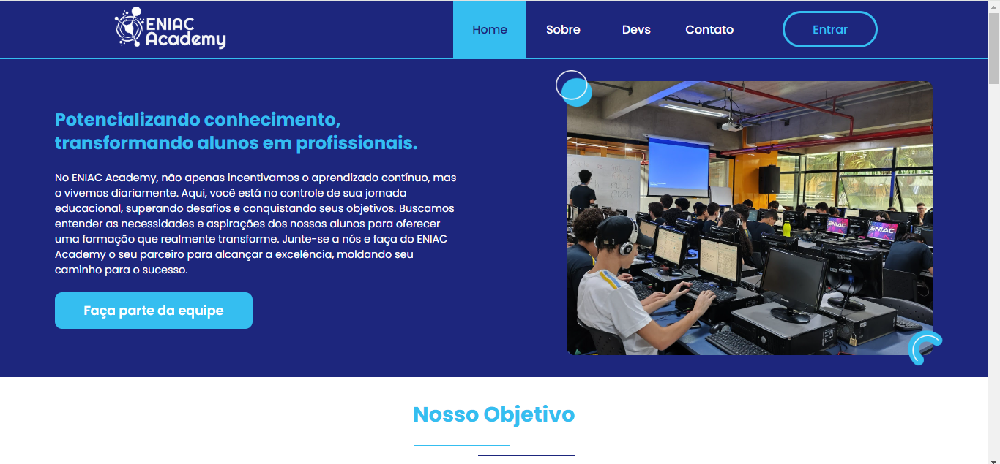

Oi, eu sou o Giovani Dantas Braconi
sou um desenvolvedor back-end com foco em Python(django) há mais de dois anos. Minha trajetória na programação começou há quase três anos, e ao longo desse tempo, expandi meus conhecimentos para tecnologias como JavaScript e PHP, além de uma base sólida no desenvolvimento front-end. Atualmente, estou direcionando meus estudos para o desenvolvimento web e mobile, buscando integrar aplicações web e mobile de forma eficiente.
Acredito que ensinar e compartilhar conhecimento são partes essenciais do desenvolvimento profissional. Compreender diferentes pontos de vista, ter uma comunicação clara e manter a organização de arquivos e projetos são fatores-chave para um bom trabalho em equipe.
O que mais me motiva na programação é resolver problemas reais e ver minhas soluções impactando empresas e pessoas. Saber que um sistema que desenvolvi pode otimizar processos, facilitar a tomada de decisões ou melhorar a experiência do usuário é extremamente gratificante.
Projeto Academy
Fui o responsável pelo back-end de toda a aplicação feita em django. Atualmente é o meu primeiro deploy e sem sombras de duvídas, um dos meus projetos favoritos...
Veja detalhes
Projeto FECEG
Foi o projeto responsável pelo meu entusiasmo com IAs e MLs, este foi um projeto em que eu crie uma esteira recicladora automática e um sub-projeto de gameficação...
Veja detalhes
Projeto ONG IAKAP
Este foi um projeto em que eu fiz um sistema de controle de alunos, aulas, material de aula, controle de coordenadores, controle de professores e doações em que a ONG...
Veja detalhes
Projeto Academy
Fui o responsável pelo back-end de toda a aplicação feita em django. Atualmente é o meu primeiro deploy e sem sombras de duvídas, um dos meus projetos favoritos
Veja detalhes